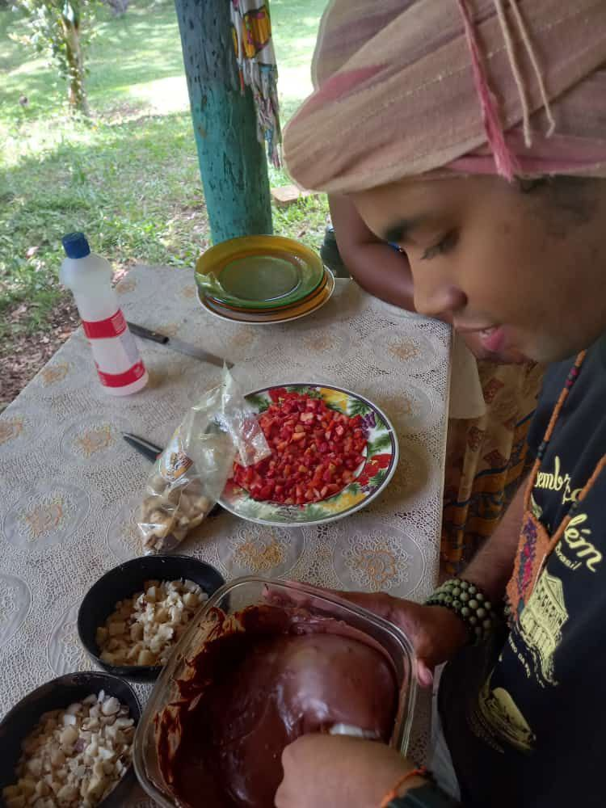
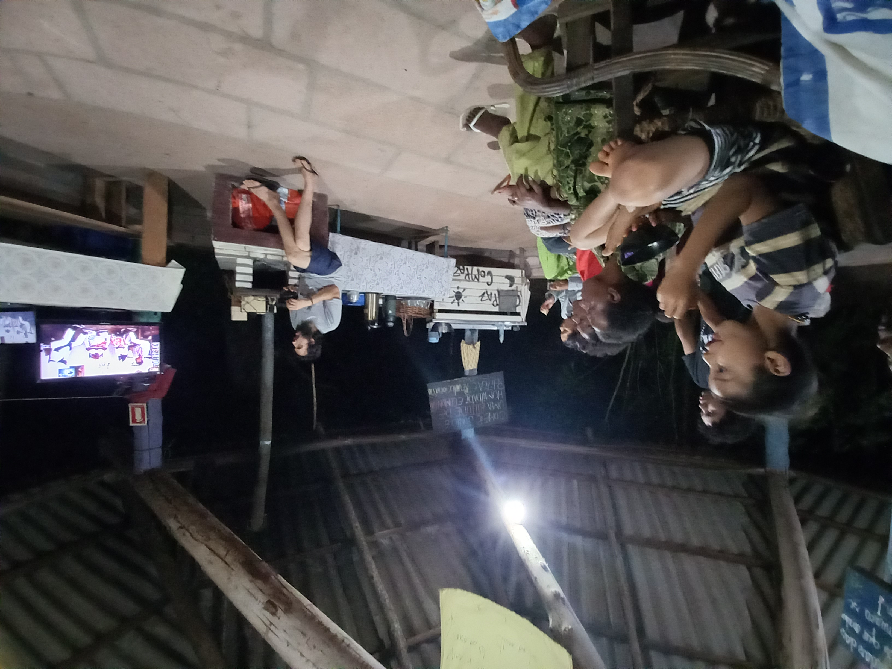
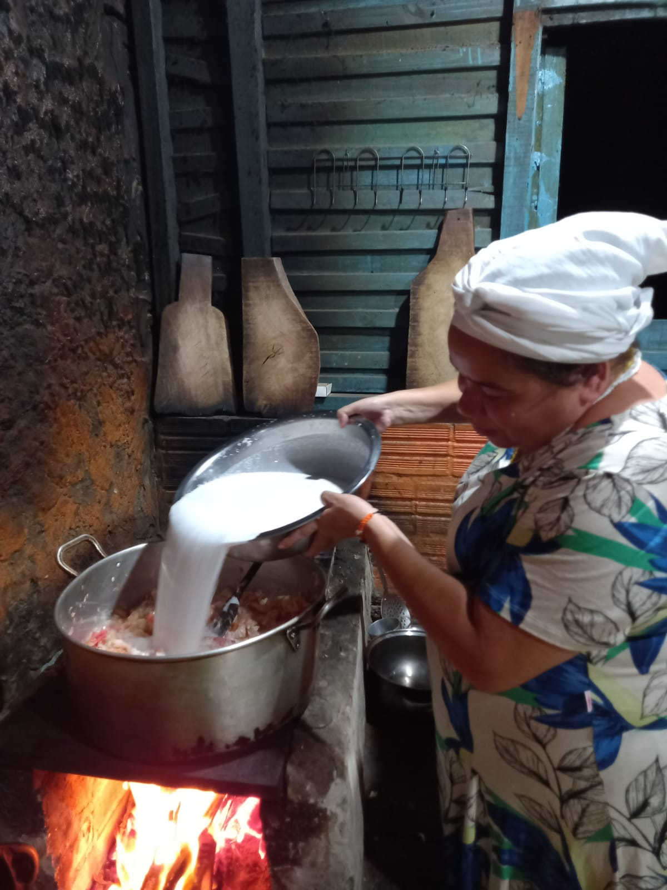

“Desamarrem as sandálias pois o chão que você pisa é sagrado”
“Desamarrem as sandálias pois o chão que você pisa é sagrado”
O Festival da Multiversidade teve como objetivo fortalecer a rede de articulação intercomunitária de compartilhamento de práticas e saberes da Multiversidade com o intuito de atuar na valorização das culturas afro-brasileiras e indígenas visando a DesFormação da juventude quilombola, indígena e de terreiro desde os saberes dos povos da terra. Inicialmente programado para acontecer de forma virtual, por meio das plataformas digitais oferecendo oficinas com diferentes linguagens artístico-culturais, pensado, mobilizado e realizados com as juventudes dos territórios, foi reformulado para um encontro presencial, de acordo com a demanda das comunidades envolvidas, no território kilombola Morada da Paz.
É tempo de olhar atento, força pra lutar
Por aqueles que já foram, os que estão e os que vão chegar
É o povo kilombola, indígenas e originários
E pra essa sociedade, isso é revolucionário
Nunca foi sorte, sempre foi Exu!
(Cantiga da juventude da Multiversidade - Okan Ilu de 2021)
Com seu movimento brincante, Exu, conduziu a Encruzilhada da Multiversidade e em meio aos desafios de 2022 fomos convocados a nos conectarmos com sua força criativa, comunicativa e aprendermos coletivamente a dançar no seu passo, no seu ritmo, no seu tempo e na sua pedagogia. A Cooptação por forças conservadoras, machistas, colonizadoras e a ruptura desrespeitosa de umas das organizações parceria do programa Encruzilhada da Multiversidade desestabilizou todo o cronograma do programa, e foi preciso muito diálogo, escuta, acolhimento e criatividade para reorganizarmos e fazermos as MuDanças e TransformAções necessárias para sua continuidade.
Assim, confiantes nos movimentos de Exu, senhor das Encruzilhadas de sonhos, saberes, afetos, ReExistências e Esperançar, na escuta atenta das juventudes e das guardiãs da Encruzilhada movimentamos o Festival para realizar-se de forma presencial, no território Kilombola Morada Paz de 01 a 07 de dezembro de 2022 como finalização do Programa Encruzilhadas da Multiversidade.
Das águas, da floresta, do asfalto, das encruzilhadas. De Roraima, de Manaus, do Pará, da Bahia, de Minas Gerais e do Rio Grande do Sul. Juventudes, ekogestores e guardiões das encruzilhadas, cruzando os céus, águas, florestas, contratempos, cansaços e lutas, chegaram no território kilombola Morada da Paz para uma sequência de atividades:
“Somos das encruzilhadas, das estrelas e das águas
E como no ajeum, somos todos como um”
(Cantiga da juventude da Multiversidade - Okan Ilu de 2021)
.jpg)
Nas sombras das árvores ocorreu a ciranda de abertura do Festival da Multiversidade, conduzida por Amotara. O convite foi para desenhar coletivamente a teia da memória e da história da Multiversidade, bem como pensarmos juntas/es/os as estratégias de continuidade: Quando a história da Multiversidade se entrecruzou com a minha história e a do meu território? Que símbolo representa a Multiversidade em meu território?
Os mais velhos da comunidade Morada da Paz iniciaram o fio da memória e lembraram que: “A Multiversidade, nasce em 2017 de um pedido ancestral. Ela é um espaço para partilha de saberes entre os povos da terra. É um espaço de saberes orgânicos, integral, de vivências e experimentações que acolhe diferentes mundos e reinos.
Espaço de valorização dos saberes ancestrais em contraponto aos saberes hegemônicos, academicistas. A Multiversidade nasce como um movimento de encontro para valorização e salvaguarda da vida”.
Após esse momento a ciranda moveu-se para a Choupana Laroyê Exu para assistirmos juntas o vídeo do Okan Ilu de 2018, marco importante na história e organização da Multiversidade. Dali seguimos para Choupana Baobá onde foram divididos pequenos grupos dedicados a refletir sobre a realidade de cada território e as estratégias e sonhos para a Multiversidade ao longo do ano de 2023. As ideias que ali surgiram, serviram de base para oficinas posteriores e, ao longo dos dias, o Festival da Multiversidade seguiu tecendo arte, cultura e esperançar.
Ana, jovem liderança do Povo Macuxi e participante da Multiversidade, conduziu uma oficina de bordado e compartilhou com os demais os saberes ancestrais do seu povo, com objetivo de valorizar e fortalecer a língua materna, que é raiz macuxi, bem como “transmitir o sentimento das nossas ancestrais de poder bordar as palavras indígenas e histórias os significados sagrados”.
A minha aldeia está em festa,
atirei flecha pro ar
apanhei folha por folha,
escorreguei na gameleira
pra chamar mano meu pra minha aldeia(2x)
Só pra chamar mano meu pra minha
aldeia(2x)
(Ponto de Seu sete Flecha - trazido por
representantes do Quilombo de Dandá/BA)


Para alegrar adultos e crianças, o jovem Erik do território Nova Canaã, Barcarena-PA trouxe os saberes e sabores do chocolate orgânico de sua comunidade. Uma tarde mais do que bonita na choupana Baobá, o fogo à lenha acendeu para derreter os chocolates, as juventudes, mulheres e crianças empenharam-se para cortar as frutas, recheio do bombom de chocolate. Na ausência de forma para feitura das barras de chocolates, Makota Cássia Kidoialê, do quilombo do Manzo, trouxe a ideia de fazer o chocolate na folha de bananeira. Erik destacou que o chocolate da comunidade recebe o nome de sua avó Abel de 103 anos, anciã e mestra da comunidade.
A partir da demanda compartilhada pelos guardiões da Encruzilhada e jovens, foram realizadas duas oficinas de Elaboração de Projetos Sociais. O objetivo desses encontros foi instrumentalizar os participantes a avançarem em sua autonomia na busca de apoio e financiamento para as ações de seus coletivos, comunidades e organizações. A primeira oficina foi realizada com a mediação de Baba Kini- ComPaz e de Patrícia Pinheiro. A segunda oficina, foi mediada por Baba Kini e Folaiyan. Dessas oficinas resultaram o esboço de dois projetos com o objetivo de interconectar os territórios e comunidades.
"Eu sou uma jardineira
Uma flor que tanto cheira
Dança, dança meus pretinhos
De avante a brincadeira."
(Brincadeira dos Pretinhos de Santarém-Novo-PA)


Folaiyan conduziu a oficina-jogo sobre autonomia comunitária, subsidiada pelo jogo de tabuleiro Autonomia Zapatista, na qual propôs refletir de forma lúdica sobre as formas de ocupação de espaços tradicionais, estruturação de identidades e lutas sociais correlatas ao processo de articulação política e autonomia das comunidades tradicionais. O que é autonomia? Quais movimentos são prioritários para a garantia da autonomia?, foram as perguntas disparadoras das reflexões. Um exercício potente de muita alegria, risadas, chuva de ideias e sonhos para construção de jogos elaborados pelos próprios jovens e crianças dos territórios.
As noites do Festival também foram regadas de danças, cantos, cinema e comensalidade. Makota Kidoialê e Ícaro, ambos do quilombo Manzo, nos conduziram ao seu território com muito amor, respeito e reverência por meio da exibição de dois vídeos documentários: “Pambele Manzo, Saudações Ancestrais” e o “Quilombo Manzo N´Gunzo Kaingo”, ambos trazendo a narrativa da história e das estratégias de luta e resistência desse território kilombola e terreiro de Candomblé da Nação Angola, construído majoritariamente por mulheres e pelas orientações de um Preto Velho, Pai Benedito, como nos explicaram.
“Se a coisa tá boa, a coisa tá preta
Saudamos os povos no kilombo de Mãe Preta”
(Cantiga da juventude da Multiversidade 2021)


A noite seguinte foi a vez de entrarmos no Samba de Roda e culinária baiana do Território de Dandá/BA. Jamires, Mikaele e Télé com saias rodadas e coloridas conduziram a noite cultural compartilhando todo o gingado e a força ancestral do samba de roda de sua comunidade, bem como sua importância para a transmissão e difusão da cultura local. Como não poderia ser diferente, essa noite também teve uma deliciosa moqueca de ovo e cuscuz de tapioca baiano: “E haverá espetáculo mais lindo do que ter o que comer” já nos dizia Carolina Maria de Jesus. Na Multiversidade dos Povos da Terra de Mãe Preta, comer junto é ato poético, político e revolucionário.
“Plantei batata nasceu mandioca
moça de hoje só namora na maloca
É na maloca, no pé da cerca,
eu não namoro porque papai e mamãe não
deixa”
(Cantiga de Samba de roda quilombo de
Danda)